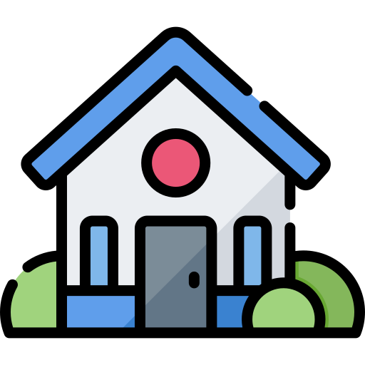

<!DOCTYPE html>
<html>

<head>
  <link rel="stylesheet" href="https://unpkg.com/leaflet@1.7.1/dist/leaflet.css"
    integrity="sha512-xodZBNTC5n17Xt2atTPuE1HxjVMSvLVW9ocqUKLsCC5CXdbqCmblAshOMAS6/keqq/sMZMZ19scR4PsZChSR7A=="
    crossorigin="" />
  <script src="https://leafletjs-cdn.s3.amazonaws.com/content/leaflet/master/leaflet-src.js"></script>
  <title>Map</title>
  <script src="https://cdnjs.cloudflare.com/ajax/libs/leaflet-routing-machine/3.2.12/leaflet-routing-machine.min.js"
    integrity="sha512-FW2A4pYfHjQKc2ATccIPeCaQpgSQE1pMrEsZqfHNohWKqooGsMYCo3WOJ9ZtZRzikxtMAJft+Kz0Lybli0cbxQ=="
    crossorigin="anonymous" referrerpolicy="no-referrer"></script>
  <link rel="stylesheet"
    href="https://cdnjs.cloudflare.com/ajax/libs/leaflet-routing-machine/3.2.12/leaflet-routing-machine.css"
    integrity="sha512-eD3SR/R7bcJ9YJeaUe7KX8u8naADgalpY/oNJ6AHvp1ODHF3iR8V9W4UgU611SD/jI0GsFbijyDBAzSOg+n+iQ=="
    crossorigin="anonymous" referrerpolicy="no-referrer" />
  <script src="js/tomtom.js"></script>
  <style>
    * {
      margin: 0;
      padding: 0;
    }

    #map {
      height: 100vh;
      width: 100vw;
    }

    #prompt {
      position: absolute;
      top: 50vh;
      left: 50vw;
      z-index: 10;
    }

    .tootlip {
      display: flex;
      justify-content: center;
      align-items: center;
    }

    .icon_tooltip {
      height: 25px;
      width: 25px;
      margin: 5px;
      cursor: pointer;
    }

  </style>
</head>

<body>
  <div id="map"></div>
</body>
<script>
  var tomtomAPIKey = ""

  // Map creation
  var map = L.map("map").setView([50.85, 4.348], 13);
  L.tileLayer("https://{s}.tile.openstreetmap.org/{z}/{x}/{y}.png", {
    minZoom: 10,
    maxZoom: 19,
    attribution:
      '&copy; <a href="https://www.openstreetmap.org/copyright">OpenStreetMap</a> contributors',
  }).addTo(map);

  function createIcon(path, icon_name) {
    return L.icon({
      iconUrl: path + icon_name,
      iconSize: [32 * 2, 41 * 2],
      iconAnchor: [15 * 2, 32 * 2],
      popupAnchor: [2, -41],
    });
  }

  var iconMarket = L.icon({
    iconUrl: "img/icon_market.svg",
    iconSize: [32 * 2, 41 * 2],
    iconAnchor: [15 * 2, 32 * 2],
    popupAnchor: [2, -41],
  });
  var iconMarketSelected = L.icon({
    iconUrl: "img/icon_market_selected.svg",
    iconSize: [32 * 2, 41 * 2],
    iconAnchor: [15 * 2, 32 * 2],
    popupAnchor: [2, -41],
  });
  var iconHome = L.icon({
    iconUrl: "img/icon_home.svg",
    iconSize: [32 * 2, 41 * 2],
    iconAnchor: [15 * 2, 32 * 2],
    popupAnchor: [2, -41],
  });
  var iconCheap = L.icon({
    iconUrl: "img/icon_cheap.svg",
    iconSize: [32 * 2, 41 * 2],
    iconAnchor: [15 * 2, 32 * 2],
    popupAnchor: [2, -41],
  });
  var iconClose = L.icon({
    iconUrl: "img/icon_close.svg",
    iconSize: [32 * 2, 41 * 2],
    iconAnchor: [15 * 2, 32 * 2],
    popupAnchor: [2, -41],
  });

  var markers = {};
  var name_used = [];
  var current_store;
  var current_home;
  var cheapest_store;
  var closest_store;
  var popup = L.popup();
  var closests;
  var array_of_coordonates;
  var current_closest = [10000000, 0, 0];
  var current_route = undefined;
  var new_path_to_compute = true;

  // Show popup when map's clicked
  function onMapClick(e) {
    popup.setLatLng(e.latlng);
    var lat = e.latlng.lat;
    var lng = e.latlng.lng;
    var popupChooseMarker = document.createElement("div");
    popupChooseMarker.setAttribute("class", "tootlip");
    popupChooseMarker.innerHTML +=
      "";
    popupChooseMarker
      .getElementsByTagName("img")[0]
      .addEventListener("click", (e) => {
        e.preventDefault();
        var popupContentHtml = document.createElement("div");
        popupContentHtml.innerHTML +=
          '<input type="text" placeholder="Nom du magasin" name="popupInput" style="margin-right:10px;background-color: #f9fafb;border: 1px solid #d1d5db;border-radius: 4px;color: #4b5563;outline: none; padding: 2px;">';
        popupContentHtml.innerHTML +=
          '<button style="padding-right: 4px;padding-left: 4px;padding-top: 2px;padding-bottom: 2px;background-color: #fbbf24;color: #4b5563;border-width: 0px;border-radius: 4px;">Ajouter</button>';
        var submitMarket = () => {
          if (popupContentHtml.lastChild.nodeName == "SPAN")
            popupContentHtml.removeChild(popupContentHtml.lastChild);
          var errorNameAlreadyTaken = document.createElement("span");
          errorNameAlreadyTaken.textContent = "Nom deja pris";
          errorNameAlreadyTaken.setAttribute("style", "color:red");

          var errorNameEmpty = document.createElement("span");
          errorNameEmpty.textContent = "Nom vide";
          errorNameEmpty.setAttribute("style", "color:red");

          var storeName = popupContentHtml.querySelector("input").value;
          if (storeName === "") {
            popupContentHtml.appendChild(errorNameEmpty);
          } else if (nameIsTaken(storeName)) {
            popupContentHtml.appendChild(errorNameAlreadyTaken);
          } else {
            createStoreMarker(storeName, lat, lng);
            popup.remove(map);
            app.addStore(storeName, lat, lng);
          }
        };
        popupContentHtml
          .querySelector("input")
          .addEventListener("keypress", (e) => {
            if (e.keyCode == 13) submitMarket();
          });
        popupContentHtml.children[1].addEventListener("click", submitMarket);
        popup.setContent(popupContentHtml);
      });

    popupChooseMarker
      .getElementsByTagName("img")[1]
      .addEventListener("click", (e) => {
        e.preventDefault();
        createHomeMarker(lat, lng);
        popup.remove(map);
      });

    popup.setContent(popupChooseMarker);
    popup.openOn(map);
  }

  /**
   * function that creates the marker of the Store
   * parameters :
   *              - name: name of the store we want to create
   *              - lat: latitude of the store
   *              - lng: lng of the store
   */
  function createStoreMarker(name, lat, lng) {
    if (name !== "" && !nameIsTaken(name)) {
      name_used.push(name);
      var marker = L.marker({ lat, lng }, { icon: iconMarket });
      var popupContentStore = document.createElement("div");
      popupContentStore.setAttribute(
        "style",
        "justify-content: center; align-items: center; display: flex; flex-direction: column;"
      );
      popupContentStore.innerHTML += "<b>" + name + "</b>";
      marker.bindPopup(popupContentStore);
      marker.addEventListener("click", () => {
        selectStore(name, lat, lng);
        app.changeSelectedStore(name);
      });
      marker.addTo(map);
      n = lat.toString() + ";" + lng.toString();
      markers[n] = marker;
    }
  }
  /**
   * function that creates the marker of the Home
   * parameters :
   *              - lat: latitude of the store
   *              - lng: lng of the store
   */
  function createHomeMarker(lat, lng) {
    if (current_home != undefined) current_home.remove();
    var marker = L.marker({ lat, lng }, { icon: iconHome });
    current_home = marker;
    marker.addTo(map);
    app.setHome(lat, lng);
    deleteCurrentPath();
    new_path_to_compute = true;
  }
  /**
   * function that checks if the name is already taken
   * parameter :
   *              - name : the name we want to verify
   */
  function nameIsTaken(name) {
    for (e in name_used) if (name_used[e] === name) return true;
    return false;
  }
  /**
   * function that loads the home marker and centralize th map on it
   * parameters :
   *              - lat : latitude of the home
   *              - lng : longitude of the home
   */
  function loadHome(lat, lng) {
    createHomeMarker(lat, lng);
    map.setView({ lat, lng }, 16);
  }
  /**
   * function that highlights the selected store
   * parameters :
   *              - name: name of the store
   *              - lat: latitude of the store
   *              - lng: longitude of the store
   */
  function selectStore(name, lat, lng) {
    map.setView({ lat, lng }, 16);
    var marker = markers[lat.toString() + ";" + lng.toString()];
    if (current_store != undefined) current_store.setIcon(iconMarket);
    current_store = marker;
    marker.setIcon(iconMarketSelected);
  }

  /**
   * function that sets the marker on the cheapest store, and restore the previous one
   * parameters :
   *              - lat: latitude of the cheapest store
   *              - lng: longitude of the cheapest store
   */
  function setCheapest(lat, lng) {
    if (cheapest_store != undefined) cheapest_store.setIcon(iconMarket);
    if (closest_store != undefined) closest_store.setIcon(iconMarket);
    n = lat.toString() + ";" + lng.toString();
    map.setView({ lat, lng }, 16);
    markers[n].setIcon(iconCheap);
    markers[n].addTo(map);
    markers[n].setOpacity(1);
    cheapest_store = markers[n];
    deleteCurrentPath();
    tracePathFromHome(lat, lng);
    new_path_to_compute = true;
  }

  /**
   * function that sets the marker on the closest store, and restore the previous one
   * parameters :
   *              - lat: latitude of the closest store
   *              - lng: longitude of the closest store
   */
  function setClosest(lat, lng) {
    if (cheapest_store != undefined) cheapest_store.setIcon(iconMarket);
    if (closest_store != undefined) closest_store.setIcon(iconMarket);
    n = lat.toString() + ";" + lng.toString();
    map.setView({ lat, lng }, 16);
    markers[n].setIcon(iconClose);
    markers[n].addTo(map);
    markers[n].setOpacity(1);
    closest_store = markers[n];
  }

  /**
   * function that deletes the store
   * parameters :
   *              - lat: latitude of the to delete store
   *              - lng: longitude of the to delete store
   */
  function deleteStore(lat, lng) {
    var marker = markers[lat.toString() + ";" + lng.toString()];
    marker.remove();
    if (current_store === marker) current_store = undefined;
  }

  /**
   * function that returns the distance of the path between Home and coordonates
   * parameters :
   *              - lat: latitude of the coordonate
   *              - lng: longitude of the coordonate
   *              - n: nb of iteration
   */
  async function getLengthPath(lat, lng, n) {
    var route = await L.Routing.control({
      createMarker: function () {
        return null;
      },
      show: false,
      routeWhileDragging: false,
      lineOptions: {
        addWaypoints: false,
      },
      lineOptions: { styles: [{ color: "#fff", weight: 0 }] },
      waypoints: [current_home.getLatLng(), L.latLng(lat, lng)],
      router: new L.Routing.TomTom(tomtomAPIKey),
    }).addTo(map);

    await route.on("routesfound", function (e) {
      var distance = e.routes[0].summary.totalDistance;
      if (distance < current_closest[0])
        current_closest = [distance, lat, lng];
      if (n + 1 == array_of_coordonates.length) {
        tracePathFromHome(current_closest[1], current_closest[2]);
        setClosest(current_closest[1], current_closest[2]);
      }
    });
  }

  function tracePathFromHome(lat, lng) {
    current_route = L.Routing.control({
      createMarker: function () {
        return null;
      },
      show: false,
      routeWhileDragging: false,
      lineOptions: {
        addWaypoints: false,
      },
      lineOptions: { styles: [{ color: "#90be6d", weight: 7 }] },
      waypoints: [current_home.getLatLng(), L.latLng(lat, lng)],
      draggableWaypoints: false,
      router: new L.Routing.TomTom(tomtomAPIKey),
    }).addTo(map);
  }

  function computeShortestPath(string_list_of_coordonates) {
    if (new_path_to_compute) {
      new_path_to_compute = false;
      deleteCurrentPath();
      array_of_coordonates = string_list_of_coordonates.split(";");
      for (let i = 0; i < array_of_coordonates.length; i++) {
        const array_of_xy = array_of_coordonates[i].split(",");
        getLengthPath(
          parseFloat(array_of_xy[0]),
          parseFloat(array_of_xy[1]),
          i
        );
      }
    }
  }

  /**
   * function that removes the existing path
   */
  function deleteCurrentPath() {
    if (current_route != undefined) current_route.remove();
    current_route = undefined;
    current_closest = [10000000, 0, 0];
  }

  /**
   * function that hides the store
   * parameters :
   *              - lat: latitude of the store to hide
   *              - lng: longitude of the store to hide
   */
  function hideStore(lat, lng) {
    var marker = markers[lat.toString() + ";" + lng.toString()];
    if (marker != undefined) marker.setOpacity(0.4);
  }

  /**
   * function that reresh all stores
   */
  function refreshAllStore() {
    for (var key in markers) {
      markers[key].setIcon(iconMarket);
      markers[key].setOpacity(1);
    }
  }

  function refreshMapInfos() {
    deleteCurrentPath();
    refreshAllStore();
    new_path_to_compute = true;
  }

  map.on("click", onMapClick);
</script>

</html>
